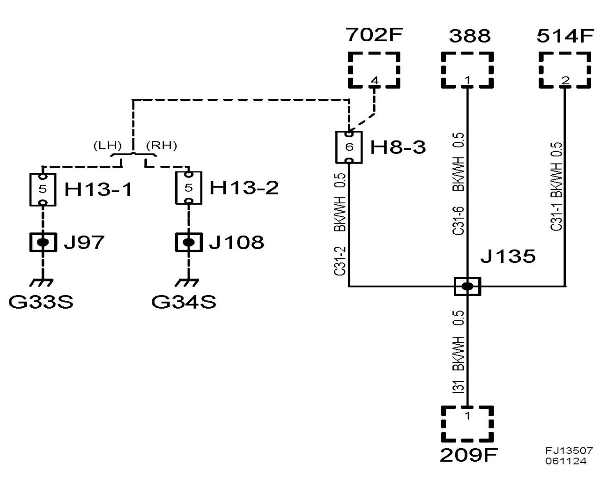
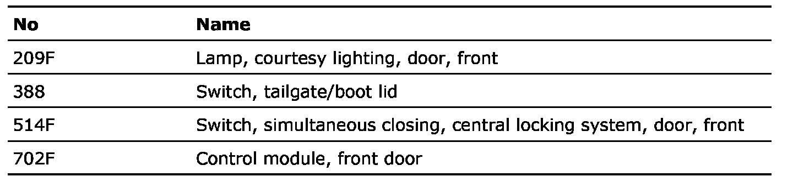

Crimp J135, Inner Door Harness
Crimp J135, Inner Door Harness
Location:
4D/5D: Approx. 130 mm from H8-3 connector towards central locking system switch
CV: Approx. 230 mm from connector H8-3 towards the central locking system switch

List of components

Crimp J97, main wiring harness
Crimp J108, main wiring harness